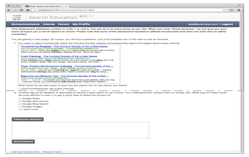
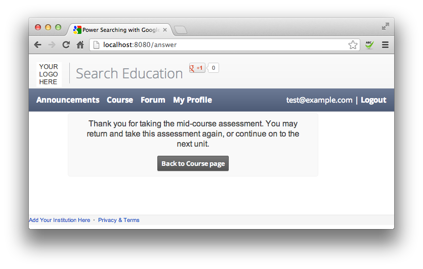
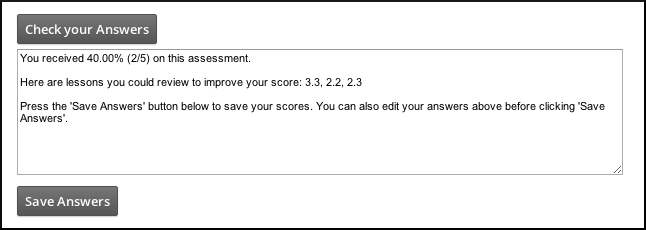

- ¿Qué
sucede en una página de evaluación?
- Diseño
de página
- Evaluaciones
de escritura
- Evaluación
- Preámbulo
- Presentación y comprobación de respuestas
- Preguntas
- Puntuación
- Cambiar
el número de evaluaciones
- Pruebas
En ciertas
partes de todo el curso, los estudiantes toman las evaluaciones para ver cómo
lo están haciendo:

Esta
página habla de la mecánica de la creación de una evaluación.
¿Qué sucede en una
página de evaluación?
Una evaluación es una prueba escalonada, por lo general material
de recubrimiento de varias unidades y lecciones. Con nuestro código
experimental, tiene el control sobre el número de evaluaciones calificadas que
usted proporciona y cómo cada una de esas evaluaciones en cuenta la puntuación
final para la calificación de un estudiante.
Cuando los estudiantes presentar una evaluación, el código
determina la forma en que lo hizo en la evaluación y proporciona la información
que usted especifique. También almacena la puntuación del alumno
para su posterior recuperación.
Diseño de página
Esta página consta de tres áreas:
- La cabecera es
la misma que para la página de inicio.
- El área de contenido contiene
las preguntas y las áreas de respuesta y un botón submit.
- El pie de página es
la misma que para la página de inicio.
La aplicación utiliza varios
archivos para hacer esta página:
- views / base.html define
el encabezado y pie de página.
- views / assessment.html define
la estructura del área de contenido.
- assets/js/assessment- {{sufijo}}}. js contiene
un objeto de JavaScript que se llena en la pregunta actual y las áreas de
respuesta para la evaluación. Cada
evaluación tiene su propio archivo.
Evaluaciones
Una evaluación contiene un texto explicativo y una o más preguntas
para el estudiante.
Se define cada evaluación en su propio archivo JavaScript. Los
nombres de los archivos tienen el formato de assessment-sufijo. Js. Por
supuesto, el sufijo muestra es una de Pre, de
mediana edad, o de aleta. Si añade más evaluaciones, se
utilizan diferentes sufijos de su elección.
El formato del fichero es
var assessment = {
assessmentName: nameString,
preamble: preambleString,
checkAnswers: booleanos,
questionsList: questionsArray
}
El archivo contiene un solo objeto llamado evaluación. Este objeto describe todo lo que
el código necesita saber acerca de una evaluación. Los atributos del objeto de evaluación son los siguientes:
- assessmentName. Una cadena que contiene un
nombre único para esta evaluación. El
código utiliza el nombre de evaluación para determinar qué tratamiento
especial para hacer una evaluación. El curso de ejemplo utiliza "precurso", "medio camino" y "postcourse".
- preamble. Cadena que contiene
el texto y completar los elementos HTML. En el preámbulo se presenta como la primera cosa en la
página de evaluación.
- checkAnswers. Boolean. Si
es Verdadero, entonces
los estudiantes pueden revisar sus respuestas antes de aprobarlos. (Tenga
en cuenta que es importante en el caso de este valor; Debe ser True o False).
- questionsList. Un
conjunto ordenado, cada uno de cuyos elementos se describen una pregunta
en la evaluación. Las preguntas que
aparecen después de la exposición de motivos.
Evaluación
Para el curso de la muestra, el valor del atributo assessmentName es uno de "precurso", "medio", o "postcurso". Si
añade más evaluaciones, se agregan más valores para este atributo. El
código en los controladores
/ assessments.py assessmentName utiliza para determinar la forma de puntuación evaluaciones.
Cuando
los estudiantes completan una evaluación, que ven un mensaje acerca de la forma
en que lo hizo. Usted puede cambiar el contenido de estos mensajes
en views /
test_confirmation.html. (Véase Presentación y
comprobación de respuestas.)
Preámbulo
El valor del atributo preámbulo es una cadena que contiene un conjunto de elementos
completos de HTML.
Es decir, si la cadena contiene una etiqueta HTML abierto (como <em>), sino que también debe tener la correspondiente etiqueta de
cierre (tal como </ em>).
También tenga en cuenta que toda la cadena debe estar en una sola
línea. Si desea que rinda como varias líneas, se debe incluir el
formato HTML adecuado.
El código simplemente hace que el código HTML que introduzca como
primera cosa en la página de evaluación.
Presentación y comprobación de respuestas
La parte inferior de una página de evaluación siempre incluye un
botón de Guardar Respuestas. Cuando los estudiantes se presentarán una
evaluación haciendo clic en este botón, aparecerá una página como la siguiente:

De forma predeterminada, esta página reconoce que presentaron la
evaluación y les da información acerca de los próximos pasos. Puede
cambiar los mensajes para diferentes evaluaciones cambiando el archivo en views /
test_confirmation.html.
Tenga en cuenta que esta página no le
dice a los estudiantes cómo se hizo en la evaluación o dar cualquier comentario
acerca de lo que puede ser que deseen estudiar un poco más. Usted
puede dar a los estudiantes la opción de revisar sus respuestas antes de
presentar una evaluación.Si se establece el atributo checkAnswers del objeto de evaluación en True, la página cuenta con una evaluación adicional Compruebe
su botón de respuestas y un espacio para sus comentarios, como se muestra aquí:

La respuesta contiene la calificación del estudiante. Si
el estudiante no responde a todas las preguntas correctamente, se muestra el
código que las lecciones el estudiante debe revisar para mejorar su puntuación. La
forma de especificar esta información se analiza en la siguiente sección.
Preguntas
El atributo questionsList es
un conjunto ordenado de objetos JavaScript, cada uno de los cuales describe una
cuestión en la evaluación.
Cada objeto de pregunta tiene tres atributos. Dos de
estos son los mismos para todos los tipos de pregunta. Qué tercero
atribuir incluir determina qué tipo de pregunta es esta.
Los atributos comunes son:
- questionHTML. Cadena
que contiene el texto y completar los elementos HTML. Esta
cadena es el texto que se muestra para esta pregunta. Al igual que
con una cadena de preámbulo, si esta cadena contiene una etiqueta HTML
abierto (como <em>), sino que también debe tener la correspondiente
etiqueta de cierre (tal como </ em>). También tenga en cuenta
que toda la cadena debe estar en una sola línea. Si
desea que rinda como varias líneas, se debe incluir el formato HTML
adecuado.
- lesson. Cadena
que representa la clase (o clases) que cubren el material que esta
cuestión se trata. La aplicación
muestra esta cadena si el estudiante responde la pregunta incorrectamente
y ha solicitado la aplicación para comprobar las respuestas.
Una pregunta puede ser una de cuatro tipos, dependiendo del
atributo tercera:
- options. Una
pregunta de opción múltiple. El
valor del atributo de opciones es
una matriz de cadenas y una llamada a la función. Cada
cadena representa una posible respuesta a la pregunta equivocada. Se
especifica la respuesta correcta con una llamada a la función de la forma correcta (string), donde la cadena es
una cadena que contiene la respuesta correcta. Los
estudiantes ven un conjunto de botones de radio para elegir, con preguntas
de opción múltiple en las actividades.
- correctAnswerNumeric. Un
número. Para preguntas con
una respuesta numérica. El valor del atributo es la respuesta
correcta.
- correctAnswerString. Un
partido entre mayúsculas y minúsculas cadena exacta. Por
ejemplo, si el valor es "hola", entonces ¡Hola yhola son correctas,
pero HelloWorld es
incorrecta. Utilice este
atributo cuando tu pregunta requiere una respuesta cadena específica.
- correctAnswerRegex. Texto
libre. El valor de este
atributo es una expresión regular captura de la respuesta correcta. Utilice
este atributo cuando su pregunta es más abierto que un partido cadena
puede manejar. En este caso, el código utiliza una expresión
regular para verificar la respuesta. Las expresiones regulares
pueden ser notoriamente difícil para un programador para hacerlo bien. Por
esta razón, es necesario tener mucho cuidado con la redacción de una
pregunta que tiene una respuesta de texto libre. Su expresión regular
tiene que dar cuenta de las variaciones razonables en las respuestas de
los estudiantes.
Puntaje
Aspectos de puntuación para la evaluación se lleva a cabo en dos
lugares en el código:
- En assets / js / actividad generic.js, checkOrSubmitAnswers determina
la puntuación de cada evaluación. La
fórmula predeterminada es simplemente un porcentaje de la cantidad de
respuestas correctas con respecto al número total de preguntas en dicha
evaluación.
- En los controladores
/ assessments.py, storeAssessmentData hace
un par de anotar cosas:
- Se
determina el momento de almacenar una puntuación de la evaluación. De
forma predeterminada, almacena el resultado ya sea si es la primera vez
que el estudiante ha tomado esta evaluación o si el puntaje es mayor que
la puntuación previamente almacenada.
- Cuando
guarde la puntuación de la evaluación final del curso, storeAssessmentData también
calcula la puntuación del estudiante en el curso. La
puntuación por defecto para todo el curso utiliza la evaluación de mitad
de período en un 30% de la puntuación y la evaluación final el 70% de la
puntuación.
Si desea que la puntuación por defecto y se utiliza el número
predeterminado de las evaluaciones, no es necesario cambiar ningún código.
Si usted tiene un número diferente de las evaluaciones, se debe
cambiar la forma en storeAssessmentData calcula la puntuación global. Tenga en cuenta que storeAssessmentData utiliza el atributo assessmentName para identificar cada evaluación.
Cambiar el número de
evaluaciones
De forma predeterminada, desarrollador del curso soporta 3
evaluaciones - una evaluación de mitad de período, evaluación precurso, y la evaluación final. La
evaluación precurso no está incluido en la puntuación
total de la asignatura.
Usted puede cambiar de rumbo Builder
para utilizar las evaluaciones más o menos. Para ello, es necesario
realizar los siguientes cambios:
- Crea una evaluación sufijo. Js para
cada evaluación. El uso de los
sufijos predeterminados de Pre, de mediana edad, y la aleta de
esas 3 evaluaciones es opcional. Un
par de puntos:
- Se
necesita el sufijo en el siguiente paso en la actualización de
data / unit.csv para incluir la nueva evaluación.
- En cada
archivo de la evaluación, se elige un valor para el atributo assessmentName. La función de la
puntuación en los controladores /
assessments.py utiliza estos valores.
- Cambie los
data / unit.csv para añadir sus evaluaciones de los puntos
apropiados de su curso.
- Actualizar storeAssessmentData en controllers / assessments.py a
considerar todas las evaluaciones cuando se calcula el puntaje general del
estudiante en el curso.
- Actualización
de vistas / student_profile.html para
mostrar información acerca de las evaluaciones en la página del perfil del
estudiante. Este archivo
identifica qué información mostrar utilizando los valores proporcionados
por storeAssessmentData.
5. Actualización de vistas /
test_confirmation.html para
mostrar los mensajes de confirmación adecuadas al término de cada evaluación. Este
archivo identifica qué mensaje se envía con valores suministrados por storeAssessmentData.
Pruebas
Los cambios realizados en cualquier archivo en el directorio de puntos de views aparecerán automáticamente en el servidor de desarrollo.
Este texto es una traducción
de las páginas Wiki del manual de Course Builder